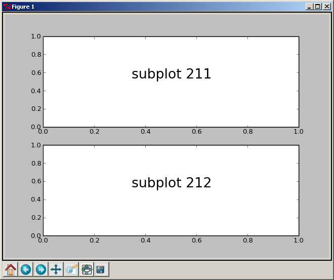
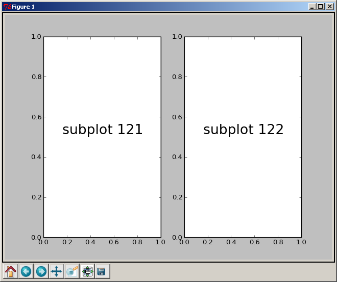
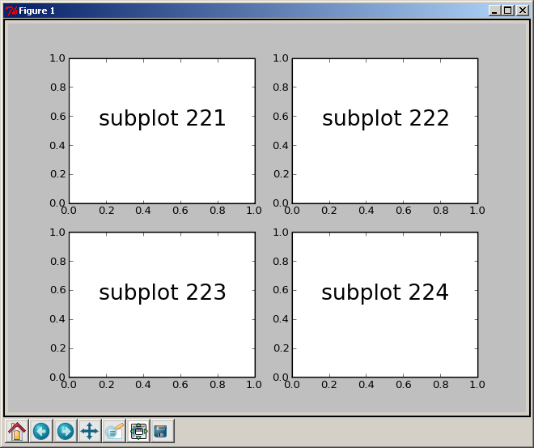
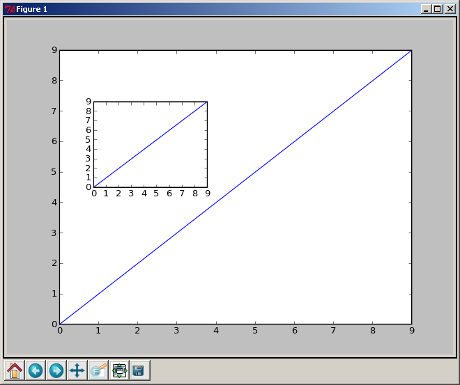

- in a variety of hardcopy formats (ps, pdf, svg, png, etc)
- and interactive environments (gtk, tk, qt, wx, html5, etc)
- across platforms (linux&unix, mac os X, windows).
Some contents are adopted from Mike Müller's scipy tutorial.
IPython is an enhanced interactive Python shell.
- access to shell commands
- improved debugging
- named inputs and outputs
- and many more.
More importantly, ipython can be run with tight integration with Matplotlib.
When we start ipython with the command line argument --pylab, it allows interactive matplotlib sessions that has Matlab/Mathematica-like functionality.
Start an interactive session:
$ ipython --pylab
Then
x = randn(10000)
hist(x, 100)
pylab provides a procedural interface to the matplotlib object-oriented plotting library. It is modeled closely after Matlab(TM). Therefore, the majority of plotting commands in pylab has Matlab(TM) analogs with similar arguments.
Let's do some more plot.
In [1]: plot(range(10))
Out[1]: [<matplotlib.lines.Line2D instance at 0x01AA26E8>]
In [2]:
The numbers form 0 through 9 are plotted: Once we have a plot, we can interactively add features to or plot.
In [2]: xlabel('measured')
Out[2]: <matplotlib.text.Text instance at 0x01A9D210>
In [3]: ylabel('calculated')
Out[3]: <matplotlib.text.Text instance at 0x01A9D918>
In [4]: title('Measured vs. calculated')
Out[4]: <matplotlib.text.Text instance at 0x01A9DF80>
In [5]: grid(True)
In [6]: plot([x*x for x in range(10)])
Plot command can take several keyword arguments as shown in the following table:
| Property | Value |
|---|---|
| alpha | alpha transparency on 0-1 scale |
| antialiased | True or False - use antialised rendering |
| color | matplotlib color arg |
| data_clipping | whether to use numeric to clip data |
| label | string optionally used for legend |
| linestyle | one of - : -. - |
| linewidth | float, the line width in points |
| marker | one of + , o . s v x > <, etc |
| markeredgewidth | line width around the marker symbol |
| markeredgecolor | edge color if a marker is used |
| markerfacecolor | face color if a marker is used |
| markersize | size of the marker in points |
There are many line styles that can be specified with symbols:
| Symbol | Description |
|---|---|
| - | solid line |
| -- | dashed line |
| -. | dash-dot line |
| : | dotted line |
| . | points |
| , | pixels |
| o | circle symbols |
| ^ | triangle up symbols |
| v | triangle down symbols |
| < | triangle left symbols |
| > | triangle right symbols |
| s | square symbols |
| + | plus symbols |
| x | cross symbols |
And lots more.
Colors can be given in many ways: one-letter abbreviations, gray scale intensity from 0 to 1, RGB in hex and tuple format as well as any legal html color name.
The one-letter abbreviations are very handy for quick work. With following you can get quite a few things done:
| Abbreviation | Color |
|---|---|
| b | blue |
| g | green |
| r | red |
| c | cyan |
| m | magenta |
| y | yellow |
| k | black |
| w | white |
plot(x, y, "r-")
The third (or second) argument can be a line format.
- color
- line style
- marker style
We've already used some commands to add text to our figure: xlabel ylabel, and title.
There are two functions to put text at a defined position. text adds the text with data coordinates:
In [2]: plot(arange(10))
In [3]: t1 = text(5, 5, 'Text in the middle')
matplotlib supports TeX mathematical expression. So r"$\pi$" will show up as you expected.
If you want to get more control over where the text goes, you use annotations:
In [5]: annotate('Here is something special', xy = (1, 1))
We will write the text at the position (1, 1) in terms of data. There are many optional arguments that help to customize the position of the text. The arguments xycoords specifies what x and y mean:
| argument | coordinate system |
|---|---|
| figure points | points from the lower left corner of the figure |
| figure pixels | pixels from the lower left corner of the figure |
| figure fraction | 0,0 is lower left of figure and 1,1 is upper, right |
| axes points | points from lower left corner of axes |
| axes pixels | pixels from lower left corner of axes |
| axes fraction | 0,1 is lower left of axes and 1,1 is upper right |
| data | use the axes data coordinate system |
annotate is meant to annoate something with text, i.e., you often need to draw arrows!
annotate('Here is something special', xy = (2, 1), xytext=(1,5),
arrowprops={'facecolor': 'r'})
So far we have used implicit figure and axes creation. This is handy for fast plots. We can have more control over the display using figure, subplot, and axes explicitly.
Both axes and subplot can be useful depending on your intention.
We've already work with figures and subplots without explicitly calling them.
When we call plot matplotlib
- calls gca() to get the current axes
- gca in turn calls gcf() to get the current figure
- If there is none it calls figure() to make one, strictly speaking, to make a subplot(111).
A figure is the windows in the GUI that has "Figure #" as title.
- Figures are numbered starting from 1 as opposed to the normal Python way starting from 0. This is clearly MATLAB-style.
There are several parameters that determine how the figure looks like:
| Argument | Default | Description |
|---|---|---|
| num | 1 | number of figure |
| figsize | figure.figsize | figure size in in inches (width, height) |
| dpi | figure.dpi | resolution in dots per inch |
| facecolor | figure.facecolor | color of the drawing background |
| edgecolor | figure.edgecolor | color of edge around the drawing background |
| frameon | True | draw figure frame or not |
The defaults can be specified in the resource file and will be used most of the time. Only the number of the figure is frequently changed.
When you work with the GUI you can close a figure by clicking on the x in the upper right corner. But you can close a figure programmatically by calling close.
Depending on the argument it closes
- the current figure (no argument)
- a specific figure (figure number or figure instance as argument)
- all figures (all as argument).
With subplot you can arrange plots in regular grid. You need to specify the number of rows and columns and the number of the plot.
A plot with two rows and one column is created with subplot(211) and subplot(212). The result looks like this:
If you want two plots side by side, you create one row and two columns with subplot(121) and subplot(112). The result looks like this:
You can arrange as many figures as you want. A two-by-two arrangement can be created with subplot(221), subplot(222), subplot(223), and subplot(224). The result looks like this:
Unless you need fine control of each subplot, you may better use subplots command.
x = np.linspace(0, 2*np.pi, 400)
y = np.sin(x**2)
f, (ax1, ax2) = plt.subplots(1, 2)
sca(ax1); plot(x, y)
sca(ax2); plot(x, y)
Axes are very similar to subplots but allow placement of plots at any location in the figure. So if we want to put a smaller plot inside a bigger one we do so with axes:
In [22]: plot(x)
Out[22]: [<matplotlib.lines.Line2D instance at 0x02C9CE90>]
In [23]: a = axes([0.2, 0.5, 0.25, 0.25])
In [24]: plot(x)
The result looks like this:
Check contour_image.py.
Take a look at the gallery.
The matplotlib code is conceptually divided into three parts:
Behind the scene, they are all objects!
An abstract base class to handle drawing/rendering operations.
The following methods must be implemented in the backend
Matpotlib is vector-vased drawing library
The class Figure lives in the module matplotlib.figure. Its constructor takes these arguments:
figsize=None, dpi=None, facecolor=None, edgecolor=None,
linewidth=1.0, frameon=True, subplotpars=None
Figure provides lots of methods, many of them have equivalents in pylab. The methods add_axes and add_subplot are called if new axes or subplot are created with axes or subplot in pylab. Also the method gca maps directly to pylab as do legend, text and many others.
In the class Axes we find most of the figure elements such as Axis, Tick, Line2D, or Text. It also sets the coordinate system. The class Subplot inherits from Axes and adds some more functionality to arrange the plots in a grid.
For example, plot returns Line2D object.
Most of matplotlib objects have several set_something method such as set_facecolor or set_edgecolor.
These method can also called using set method.
From pylab, you may use setp function.